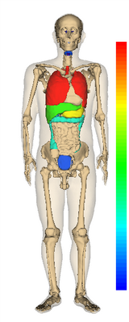

Step4: Step3から肋骨を取り除いて見やすくする
サンプルコードの出力結果

Step3の図では、肋骨(rib)が内臓を覆っていて見えにくいので、肋骨を除去します。
別法として、肋骨の半透明表示も可能です。
サンプルコードの説明
詳しくは、Javadocをご覧ください。
41行目： setDeleteOn(1)で肋骨を削除しています。
サンプルコード
1 import jp.dbcls.ag.AgClient;
2 import jp.dbcls.ag.AgOrgan;
3 import jp.dbcls.ag.AgProp;
4
5 import java.util.ArrayList;
6
7 /**
8 * Step4 Step3から肋骨を取り除いて見やすくする。
9 */
10 public class Step4 {
11 static AgProp prop = null;
12
13 static ArrayList organs = null;
14
15 public static void main(String[] args) throws Exception {
16 prop = new AgProp();
17 prop.setWinSize(240, 640);
18 /** カラーバーを表示します。 * */
19 prop.setColorBarOn(1);
20
21 organs = new ArrayList();
22 AgOrgan o;
23
24 /** 体幹と全身の骨と皮膚を背景として描画する * */
25 o = new AgOrgan();
26 o.setName("trunk"); // 体幹
27 organs.add(o);
28
29 o = new AgOrgan();
30 o.setName("skin"); // 皮膚
31 o.setOpacity(0.2);
32 organs.add(o);
33
34 o = new AgOrgan();
35 o.setName("bone"); // 骨
36 organs.add(o);
37
38 /** 見やすくするため肋骨を除去する * */
39 o = new AgOrgan();
40 o.setName("rib"); // 肋骨
41 o.setDeleteOn(1);
42 organs.add(o);
43
44 /** がんの部位別死亡数をsetScalar()でセットする * */
45 o = new AgOrgan();
46 o.setName("throat"); // 咽頭
47 o.setScalar(4034);
48 organs.add(o);
49
50 o = new AgOrgan();
51 o.setName("esophagus"); // 食道
52 o.setScalar(9405);
53 organs.add(o);
54
55 o = new AgOrgan();
56 o.setName("stomach"); // 胃
57 o.setScalar(32851);
58 organs.add(o);
59
60 o = new AgOrgan();
61 o.setName("colon"); // 結腸
62 o.setScalar(13305);
63 organs.add(o);
64
65 o = new AgOrgan();
66 o.setName("rectum"); // 直腸
67 o.setScalar(8530);
68 organs.add(o);
69
70 o = new AgOrgan();
71 o.setName("liver"); // 肝臓
72 o.setScalar(23421);
73 organs.add(o);
74
75 o = new AgOrgan();
76 o.setName("gallbladder"); // 胆嚢
77 o.setScalar(7476);
78 organs.add(o);
79
80 o = new AgOrgan();
81 o.setName("pancreas"); // 膵
82 o.setScalar(11933);
83 organs.add(o);
84
85 o = new AgOrgan();
86 o.setName("larynx"); // 喉頭
87 o.setScalar(964);
88 organs.add(o);
89
90 o = new AgOrgan();
91 o.setName("lung"); // 肺
92 o.setScalar(43921);
93 organs.add(o);
94
95 o = new AgOrgan();
96 o.setName("trachea"); // 気管
97 o.setScalar(43921);
98 organs.add(o);
99
100 o = new AgOrgan();
101 o.setName("prostate"); // 前立腺
102 o.setScalar(8840);
103 organs.add(o);
104
105 o = new AgOrgan();
106 o.setName("bladder"); // 膀胱
107 o.setScalar(3817);
108 organs.add(o);
109
110 o = new AgOrgan();
111 o.setName("nerve"); // 神経
112 o.setScalar(926);
113 organs.add(o);
114
115 String imageurl = AgClient.getImage(prop, organs);
116
117 String imagefile = "step4.png";
118 AgClient.saveFile(imageurl, imagefile);
119 }
120 }